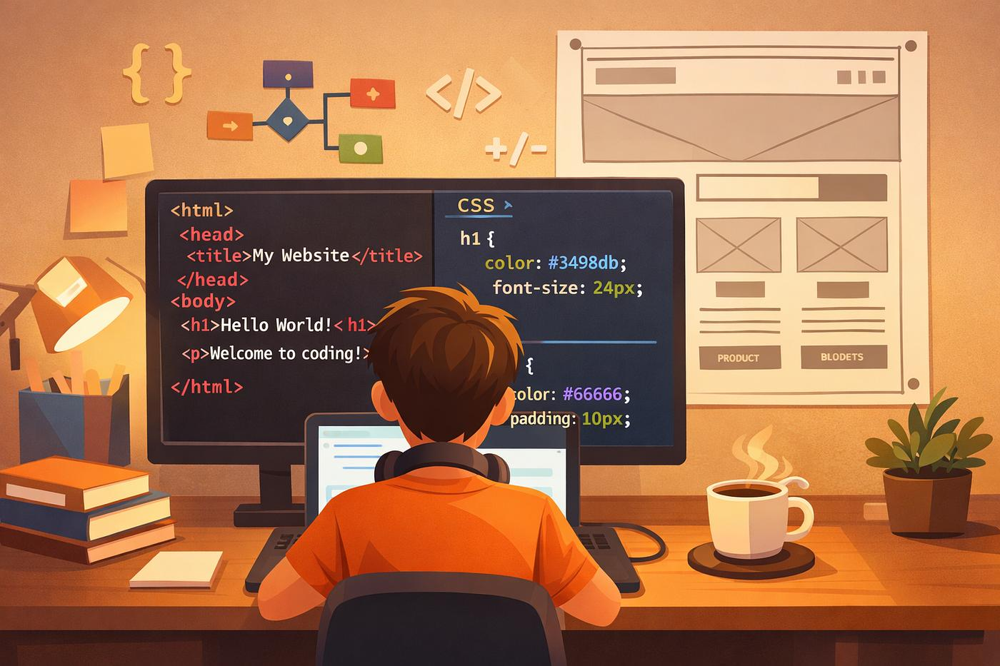

HTML
— скорочення від
"HyperText Mark-up Language"
- перекладається як
«Мова розмітки гіпертексту».
https://w3schoolsua.github.io/
Гіпертекст - це текст, що не послідовно зв'язаний з іншими документами, дозволяючи з першої сторінки документу перейти на останню. HTML впроваджує засоби для: створення структурованого документу шляхом позначення структурного складу тексту: заголовки, абзаци, списки, таблиці, цитати та інше ;
отримання інформації
із Всесвітньої мережі
через гіперпосилання;
створення інтерактивних форм;
включення зображень, звуку, відео,
та інших об'єктів до тексту
.
включення
зображень,
звуку,
відео
та інших об'єктів до тексту
.

Вебпрограмування охоплює створення вебсторінок та вебзастосунків, які працюють у браузері. Основою вебсторінки є HTML, який визначає її структуру та розташування основних елементів.
Для оформлення вебсторінок використовується CSS, а для додавання інтерактивності — JavaScript. Разом ці технології дозволяють створювати сучасні та зручні вебресурси.
HTML відповідає за структуру вебсторінки, CSS — за її зовнішній вигляд, а JavaScript забезпечує інтерактивність та динамічну поведінку елементів.
Вебпрограмування — важлива складова сучасних інформаційних технологій.